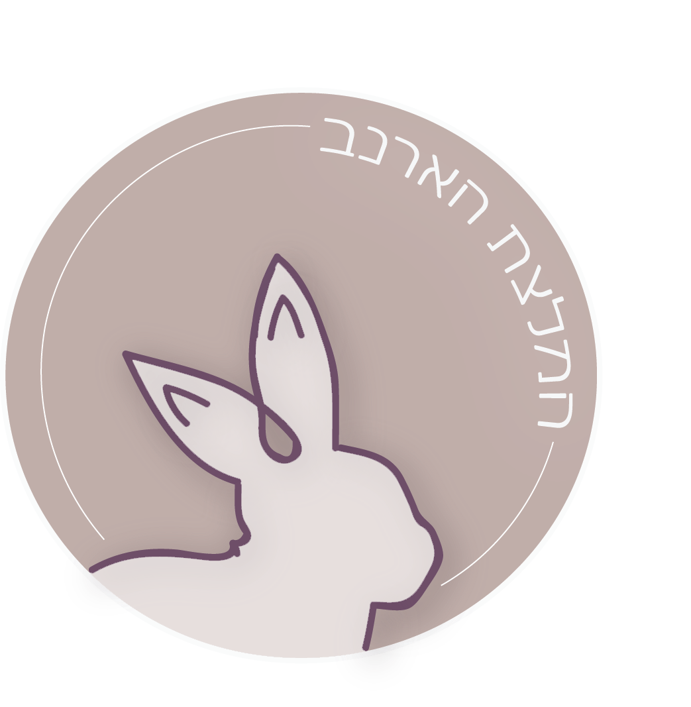

-
כדי לעשות סדר בבלאגן, במעבר לטיפוח טבעוני אנחנו ממליצות לפעול לפי השלבים הבאים:
- להבין מה זה אומר מוצר טבעוני
- לבדוק באמצעות האפליקציה/אתר האם המוצר נוסה על בעלי חיים, לבדוק שהוא לא מכיל מוצרים מן החי הכתובים מעלה
- טיפ קטן, ולקנות!
שלושת השלבים
1 - להבין מה זה מוצר טבעוני
- מוצרים שלא מכילים אף רכיב מן החי
- מוצרים שלא נעשה באף שלב (ייצור/ פיתוח/ שיווק) ניסויים בבעלי חיים
2 - להבין איך מזהים מוצרי טיפוח טבעוניים
סמל הארנב?
משמעות סמל הארנב הוא שהמוצר לא נוסה על בעלי חיים. אבל, הסמל לא תקף בישראל, לא קיימת לגליזציה ולא כל המוצרים הטבעוניים מסומנים.
-
אז איך כן נזהה?
- אפליקציית "בוחרים ביופי" מציגה רשימה מעודכנת של מוצרים והאם נוסו/לא נוסו על בעלי חיים, ואפשרות חיפוש מוצרים. אמין!
- האפליקציה לא מותקנת במכשיר הסלולרי שלכם ואתם בדיוק בחנות? האגודה הישראלית נגד ניסויים בבעלי חיים ייענה לכם באותה המהירות.
מוצר שלא מכיל מוצרים מן החי -
לא כל המוצרים הטבעוניים מסומנים כמוצרים שלא מכילים מוצרים מן החי, אך לא צריך להתייאש מהחיפוש. לחצו כאן כדי לראות את רשימת הרכיבים מן החי במוצרי קוסמטיקה.
3 - טיפ קטן, ולקנות !
קיימות חברות הטוענות שהן טבעוניות, והן למעשה חברות בת של חברות לא טבעוניות. בסופו של דבר, רכישה מחברה שהיא טבעונית אך חברת בת של חברה לא טבעונית, היא בחירה אישית של כל אחד מאתנו. אך חשוב לדעת ולהכיר.
אולי תהיתם גם...
האם הטיפוח הטבעוני מהווה אלטרנטיבה ראויה לטיפוח מן החי?
החברות והמוצרים בדף המלצות העורכת באתר זה, והמוצרים באתרים אליהם אנחנו מפנות, הינם תכשירים שעברו בדיקות במכונים דרמטולוגיים והוכחו כיעילים.
מה הם מחירי איפור טבעוני?
המחירים של קוסמטיקה טבעונית יהיו בדרך כלל נמוכים יותר. מוצרים טבעוניים ינועו בין 100 ל־200 שקלים.
מה קורה בישראל?
נכון, ביחס למדינות אחרות, בישראל עדיין לא קיים המענה וההגדרות הברורות למהם מוצרי טיפוח טבעוניים. אבל אין סיבה להתייאש, השתמשו באפשרויות שכתבנו לכם, כנסו לעמוד המלצות העורכת ואין סיבה שלא תמצאו את מוצר הטיפוח הבא שלכם.

האודם הטבעוני המושלם?
איל מקיאז'! מהניסיון שלי האודם עמיד, אני שמה אותו פעם בערב ובקושי צריך לחדש. יש מבחר גוונים בחנות, שזה כיף. ובכלל, יש הרבה סניפים, אז החנות זמינה. כעיקרון זה לא הכי זול, אודם עולה 90 ₪. אבל! אני קיבתי ליום הולדת 100 שקל מתנה מהחנות וככה קניתי את האודם. לדעתי - הוצאה משתלמת מכל הבחינות, אני משתמשת כל הזמן ולא מפסיקה לקבל מחמאות.